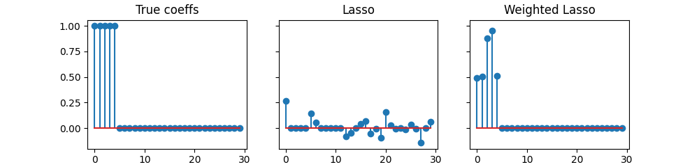

Note
Click here to download the full example code
Lasso vs Weighted Lasso¶
Illustrate the importance of feature normalization when penalizing.
# Author: Mathurin Massias
# Quentin Bertrand
import numpy as np
from numpy.linalg import norm
import matplotlib.pyplot as plt
from andersoncd import Lasso, WeightedLasso
from andersoncd.data import make_correlated_data
n_features = 30
X, _, _ = make_correlated_data(
n_samples=50, n_features=n_features, random_state=0)
w_true = np.zeros(n_features)
nnz = 5
w_true[:nnz] = 1
# assume for some reason important features have a smaller norm than the other
X[:, :nnz] *= 0.1
noise = np.random.randn(X.shape[0])
# use a signal-to-noise ratio of 2
y = X @ w_true + 0.5 * norm(X @ w_true) / norm(noise) * noise
# the Lasso does not select small norm features, while the weighted Lasso does:
alpha_max = np.max(np.abs(X.T @ y)) / len(y)
alpha = alpha_max / 10
las = Lasso(alpha=alpha, fit_intercept=False).fit(X, y)
wei = WeightedLasso(alpha=alpha, weights=norm(X, axis=0)).fit(X, y)
fig, axarr = plt.subplots(1, 3, sharey=True, figsize=(10, 2.4))
axarr[0].stem(w_true)
axarr[0].set_title("True coeffs")
axarr[1].stem(las.coef_)
axarr[1].set_title("Lasso")
axarr[2].stem(wei.coef_)
axarr[2].set_title("Weighted Lasso")
plt.show(block=False)
Total running time of the script: ( 0 minutes 2.587 seconds)